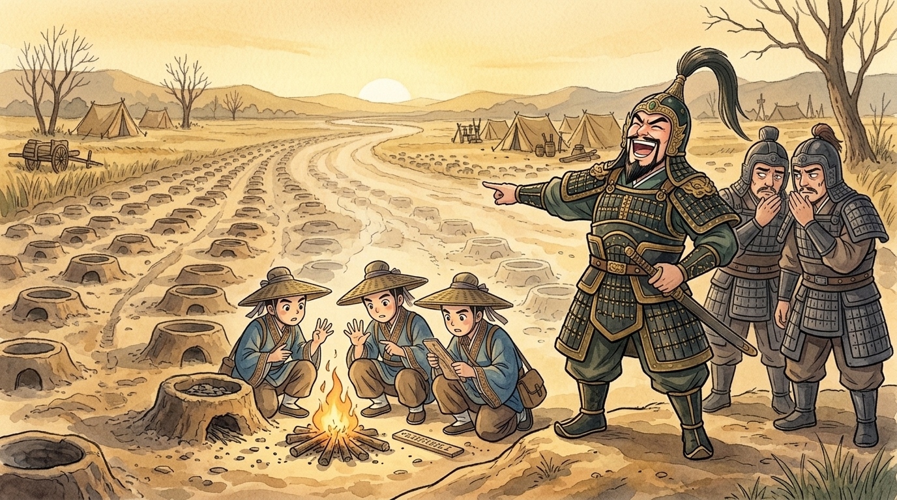
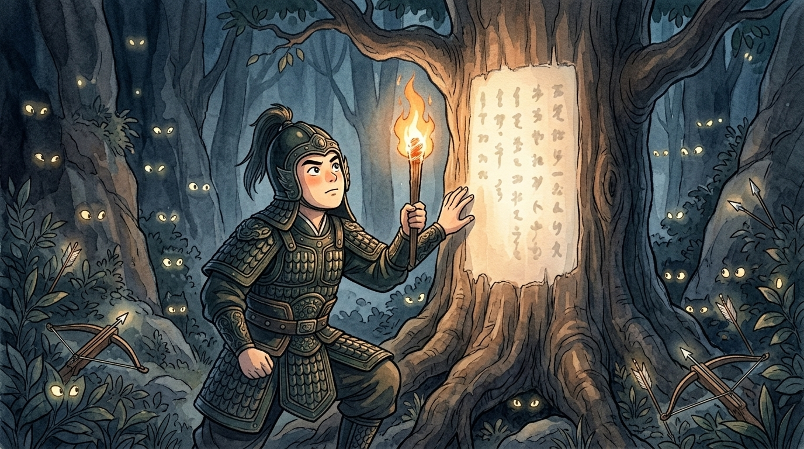
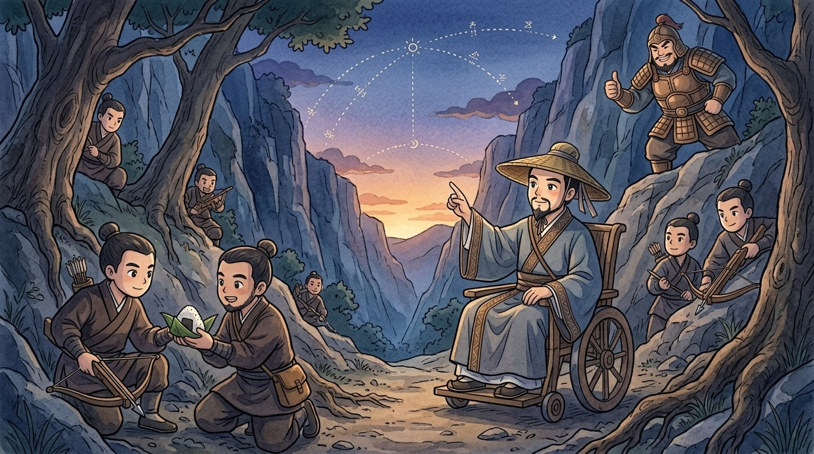

Casebook of a travelling detective, opened on the north road out of Wei (魏), in the year humans call 341 BCE. I arrived three days after the famous disaster, hired to answer one question: how did the mightiest army of Wei vanish into a dark valley called Maling (馬陵)? The road itself will testify. Roads always do — if you know how to listen. Walk with me, junior detective. Bring a lantern. Mind the ashes.1
🔍 Exhibit A: the war before the clues
Background, from the case file. Thirteen years ago, the strategist Sun Bin (孫臏) humiliated General Pang Juan (龐涓) at Guiling — the legendary "surround Wei to save Zhao" move; the full replay is on this shelf. Now Wei was at it again, this time invading the state of Han (韓). Han begged Qi (齊) for help. And Qi's answer was… the exact same opening move: march on Wei's capital. The generals of Wei must have groaned: "AGAIN?!" Pang Juan dropped the invasion and rushed home, boiling for revenge (復仇) — this time, he swore, he would chase down that crippled schemer and finish their old quarrel forever.
So far, ordinary war. But at this point, junior detective, the Qi army did something extraordinary: it turned around and RAN. Fled east, day after day, looking for all the world like an army losing its nerve. And it left behind the clues that make this case immortal. Follow me down the road it took.
🔍 Exhibit B: the stoves
Here — first campsite. Kneel. Count the cooking stoves (灶) dug into the earth: pits blackened with ash, enough to cook for one hundred thousand men. Pang Juan's scouts counted them too, that first morning of the chase. An army this size is dangerous. He followed carefully.
Second campsite, a day's march east. Count again. Stoves for… fifty thousand. Half the army's stoves, gone. And here, third campsite: stoves for barely thirty thousand. Now, junior detective, what story do these numbers tell? Pang Juan read them the way he WANTED to read them: "The cowards of Qi are deserting! Half their soldiers fled in three days! I always said Qi troops were gutless!" He laughed — witnesses on the road heard him — left his slow heavy infantry behind, and raced ahead with only his fastest troops, riding day and night to catch the "crumbling" army.2
Observe, junior detective: every stove was dug by a soldier who then marched on, perfectly healthy. The stoves lied. Numbers written on the ground are still just writing — and writing has an author. The question a good detective always asks: WHO WANTS ME TO READ THIS, and what do they want me to believe? Pang Juan never asked. Deserters (逃兵) leave mess, dropped kit, stragglers. This road is clean as a swept kitchen. This "retreat" has a choreographer.

🔍 Exhibit C: the road chooses the time
Now the masterstroke, which I reconstruct with professional admiration. Sun Bin — riding in his chair at the head of the "fleeing" army — was not merely faking weakness. He was doing arithmetic. He knew the roads, knew Pang Juan's speed, and calculated it precisely: "Chasing at cavalry pace, he will reach the town of Maling… at dusk on the third day."3 Look around you, junior detective: the Maling road runs into this narrow gorge, cliffs close on both sides, trees thick as a curtain. A perfect place for an appointment.
Qi's army stopped running. Ten thousand crossbowmen climbed the slopes and hid in the trees, with one instruction: "When you see a light below — shoot at the light."

And then Sun Bin prepared the strangest clue in the history of warfare. He chose one great tree beside the road, had its bark stripped white, and wrote on the bare wood, in large dark characters, a message addressed to one single reader.
🔍 Exhibit D: the tree that read back
Dusk, third day — exactly on schedule — Pang Juan's exhausted vanguard clattered into the gorge. Black as ink under the trees. At the narrowest point, scouts reported something strange: a great tree, bark stripped, with writing on it, too dark to read. Pang Juan rode close. Of course he did — writing on a tree, in the middle of nowhere? A man who had misread every clue for three days was not going to leave this one alone. He called for a torch (火把).
The flame jumped. And in its light he read, in Sun Bin's own hand:
One heartbeat — the torch trembling — and then the whole dark valley answered it. Ten thousand crossbows had been waiting for exactly one signal: a light. He had carried the signal himself, and lit it under the target. Arrows fell like the year's whole rainfall in a minute; the trapped column crumpled; and Pang Juan, seeing in that torchlit instant the entire three-day story rewritten — the stoves, the "cowards," the clean road, all of it bait, all of it AIMED at his own contempt — ended his story there beneath the tree, by his own choice, with one last bitter cry: "So the world will call that cripple a genius!" The rest of Wei's proud army, arriving behind, was swept away by Qi's counterattack. Wei never truly recovered; Sun Bin closed his old case forever.4

🔍 Case closed: the detective's summary
So, junior detective — who defeated the great army of Wei? Not crossbows. Crossbows were merely the full stop at the end of the sentence. The true weapon was Pang Juan's own certainty. Sun Bin studied his old classmate the way I study a road: he knew Pang Juan despised him, despised Qi, and would swallow whole any clue (線索) that flattered that contempt. The stoves didn't fool Pang Juan. Pang Juan fooled Pang Juan. Sun Bin just set the table.5
Note also the pattern across our two case files: at Guiling, Sun Bin controlled where his enemy marched; at Maling, he controlled what his enemy believed. The second is deadlier. Carelessness (大意) about facts loses battles — but hearing only what you WANT to hear loses everything.
Your detective's lesson, then, junior colleague: when evidence agrees with you a little too sweetly — when every clue says exactly what you were hoping — that is precisely the moment to slow down and count the stoves again. Flattering clues have authors. The case is closed; the lesson never is. 🔍